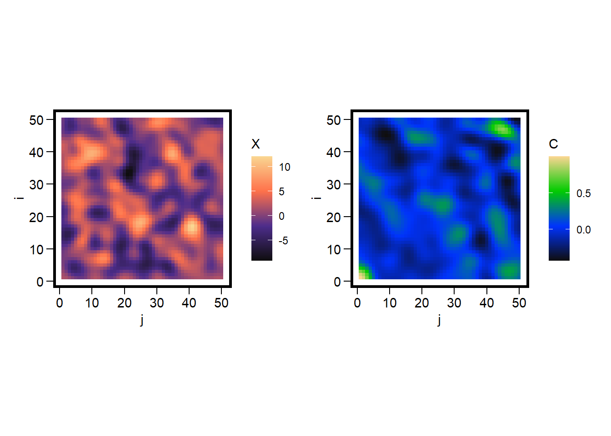
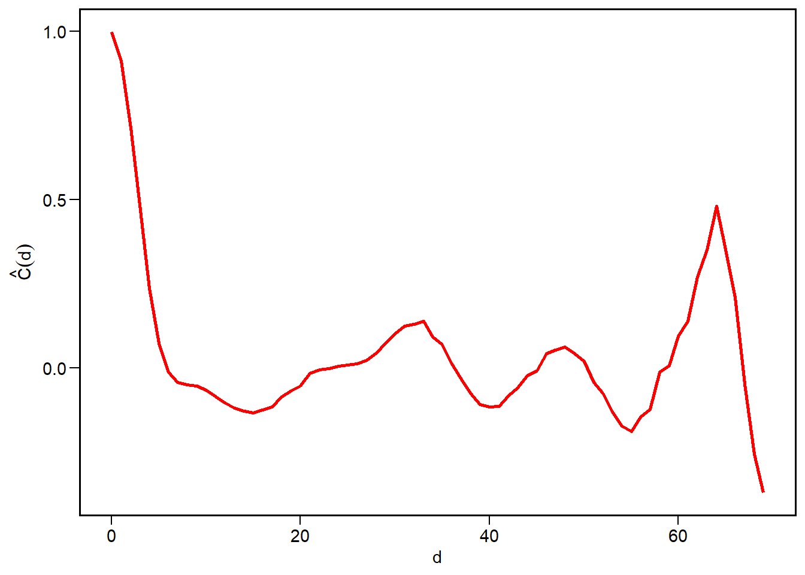

Landscapes contain myriad spatial patterns. These patterns interest us because of their implications for a variety of ecological processes. Here I treat landscapes as random fields and examine the spatial patterns the arise from them. A random field treats a lattice as a continuous surface; a vegetation gradient. Patterns arise on this surface by creating random noise and then smoothing it based on correlation distances.
White noise has structure inside it; smoothing reveals it.
The objectives of this exercise are to 1. learn to generate random fields, and 2. learn the methods of summarise them (spatial variance, correlation lengths).
Noisy Field
Suppose we have a square lattice of size \(N \times N\) where \(i = 1,...,N\) and \(j = 1,...,N\). Each cell of this lattice has a coordinate \((i,j)\). We begin by generating a very noisy random field made up of Gaussian noise at each cell location
\[
\begin{align}
\varepsilon(i,j) \sim \mathcal{N}(0,\sigma^2), \qquad \text{independent for all }(i,j).
\end{align}
\] We can think of \(\varepsilon(i,j)\) as the “speckling” of the grid. This speckling has no spatial pattern that is qualitatively evident.
Gaussian Kernel
Next we define a kernel \(K_{\ell}(\Delta i, \Delta j)\) that depends on the differences between a pair of cells in the lattice. To start, we use a Guassian kernel
\[
\begin{align}
K_{\ell}(\Delta i, \Delta j) = \text{exp}\biggl(\frac{\Delta i^2 + \Delta j^2)}{2\ell^2}\biggr).
\end{align}
\] The notation \(\Delta i\) and \(\Delta j\) capture the differences between the values at cell locations. The locations of these comparison cells are \((u,v)\), with \(\Delta i = i - u\) and \(\Delta j = j - v\). Here \(\ell\) is a scale parameter that controls the correlation length.
When \(\ell\) is small, the patterns are peaked and rugged.
When \(\ell\) is large, the patterns are smoother, averaged over many neighbors.
Convolution
To construct the random field \(X(i,j)\), we smooth over the noisy field \(\varepsilon(i,j)\) using the chosen Gaussian kernel function. Mathematically, this looks like
For each focal cell \((i,j)\), we examine a reference pixel \((u,v)\) and compute the difference. This is used to assign a weight \(w = K_{\ell}(\Delta i, \Delta j)\) that is multiplied by the noise \(\varepsilon(u,v)\). We sum over these such that \(X(i,j)\) is a weighted average.
Simulation
In code, we have two sets of loops: one over \((i,j)\) and a second over \((u,v)\). But first, we generate the noisy field.
library(tidyverse)library(latex2exp)
Warning: package 'latex2exp' was built under R version 4.3.3
library(patchwork)
Warning: package 'patchwork' was built under R version 4.3.3
This equation centers the values of \(X(i,j)\) using the mean \(\bar{X}\), then centers the difference between \(X(i,j)\) and \(X(h,k)\). This expression is then rescaled by the variance \(\hat{\sigma}^2\). The fraction \(\frac{1}{N_{h,k}}\) identifies the valid pairs to compare after the differences are summed over.
corr_surface =function(X) { N =nrow(X) meanX =mean(X) varX =var(as.vector(X)) C =matrix(0, N, N)for(h in0:(N-1)) for(k in0:(N-1)) { total =0 count =0for(i in1:(N-h)) for(j in1:(N-k)) { a = X[i,j] - meanX b = X[i+h,j+k] - meanX total = total + (a * b) count = count +1 } C[h+1,k+1] = total / (count * varX) }return(C)}X =simulate_grf(N =50, ell =2, sigma =1)C =corr_surface(X)corr_df =expand.grid(i =1:nrow(C), j =1:ncol(C)) |>mutate(C =as.vector(C), X =as.vector(X))ggplot(corr_df, aes(x=j, y=i, fill=X)) +geom_tile() +scale_fill_gradientn(colours =pal1(N)) +coord_fixed() +labs(fill ='X') +theme(panel.background =element_rect(color='black', fill=NA, size=2)) +ggplot(corr_df, aes(x=j, y=i, fill=C)) +geom_tile() +scale_fill_gradientn(colours =pal2(N)) +coord_fixed() +labs(fill ='C') +theme(panel.background =element_rect(color='black', fill=NA, size=2))

With the correlation surface in hand, we can reduce it to a correlation function by first defining the distance between each pair
Here we define the distance bins using delta to define the intervals of interest. If delta = 1, this is the same as rounding down the distances using floor. Plug in the surface from corr_surface and average the correlations within each bin, along with the number of pairs.
corr_distance =function(C, delta=1, min_pairs =NULL) { N =nrow(C)# define the grid hk =expand.grid(h =0:(N-1), k =0:(N-1) )# sqrt of distance hk$d =sqrt(hk$h^2+ hk$k^2) hk$C =as.vector(C)# distance bins maxd =max(hk$d) centers =seq(0, maxd, by=delta) cd =data.frame(distance = centers, corr =NA, n_pairs =NA )for(idx inseq_along(centers)) { d0 = centers[idx]# find distances within the bin in_bin =abs(hk$d - d0) < (delta /2) vals = hk$C[in_bin]if(length(vals) >0) { cd$corr[idx] =mean(vals) cd$n_pairs[idx] =length(vals) } else { cd$corr[idx] =NA cd$n_pairs =0 } }if(!is.null(min_pairs)) { cd = cd |>filter(n_pairs >= min_pairs) } return(cd)}cd =corr_distance(C, delta =1)ggplot(cd, aes(x=distance, y=corr)) +geom_line(size=1, color='red') +labs(x ='d', y =TeX("$\\hat{C}(d)$"))
Warning: Using `size` aesthetic for lines was deprecated in ggplot2 3.4.0.
ℹ Please use `linewidth` instead.

The graph shows that cells which are close together in space are highly correlated, that this correlation decays rapidly, but it oscillates. This can indicate some quasi-periodicity in the spatial patterns.
We can now apply this function to different spatial patterns generated by varying the value of \(\ell\), and compare the correlation distances.
ell_seq =1:4C_list =list()for(k in1:length(ell_seq)) { x =simulate_grf(N, sigma =1, ell = ell_seq[k]) c =corr_surface(x) d =corr_distance(c, delta =1) d$ell = k C_list[[k]] = d}cp =bind_rows(C_list) |>ggplot(aes(x=distance, y=corr, color =factor(ell))) +geom_line(size=1) +labs(color ='\u2113', x ='d', y =TeX("$\\hat{C}(d)$")) p1 / cp +plot_layout(heights =c(2.75,1.5))